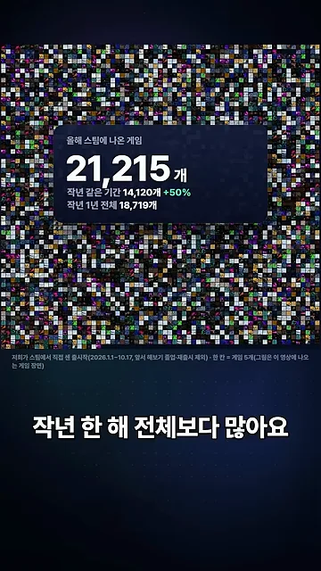
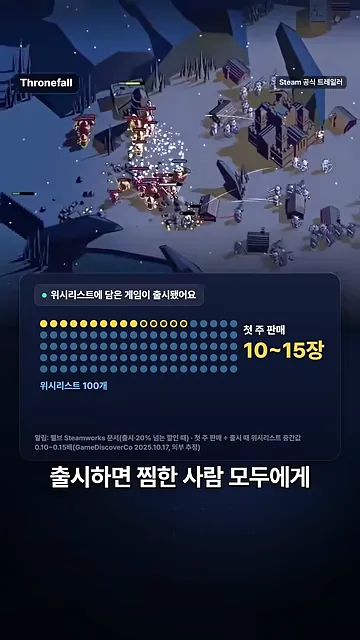
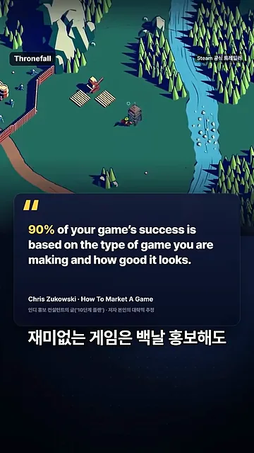
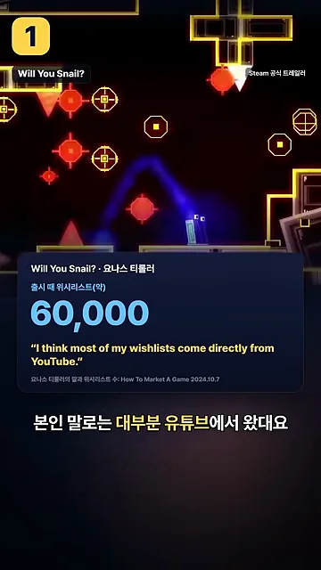
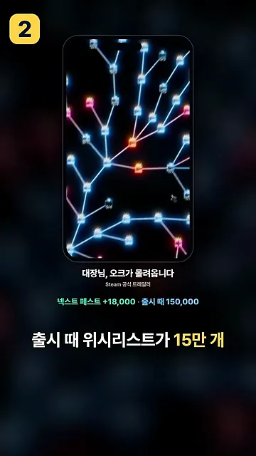
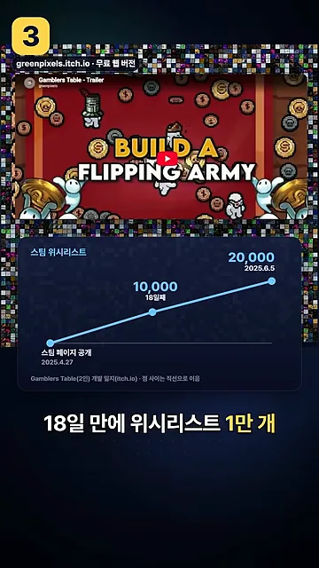
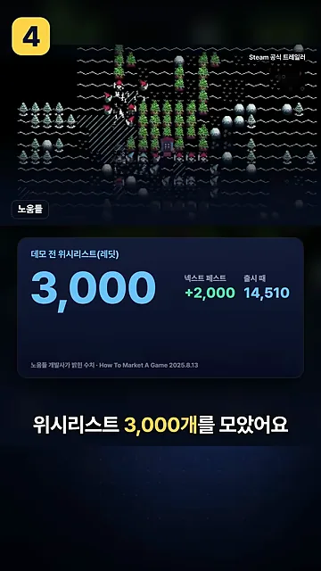
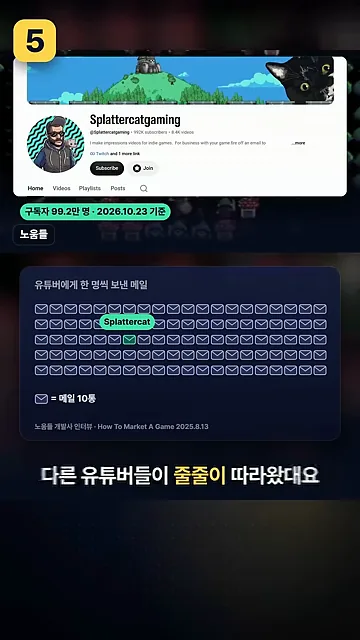
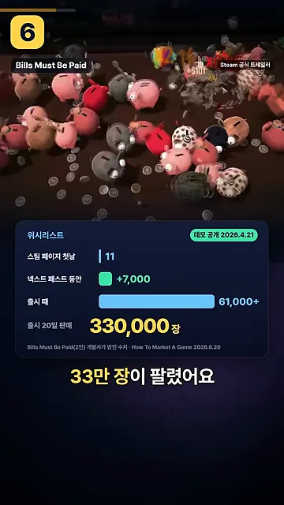

왜 다들 위시리스트부터 모을까요
영상은 숫자로 시작해요. 영상을 만든 팀이 스팀 출시작을 직접 세어 봤더니, 2026년 1월 1일부터 10월 17일까지 나온 게임이 가운데 카드의 21,215개였어요. 카드 아래 줄을 보면 작년 같은 기간(14,120개)보다 50% 많고, 작년 한 해 전체(18,719개)보다도 많아요. 뒤에 깔린 작은 칸 하나가 게임 다섯 개예요.

홍보의 목표는 위시리스트예요
미국에 사는 이 팀이 현지 개발자들이 많이 쓰는 홍보 방법을 찾아보니, 방법은 달라도 결국 모두 위시리스트를 모으고 있었어요. 이유는 두 가지예요. 게임이 출시되면 찜해 둔 사람 모두에게 알림이 가요. 그리고 위시리스트가 많이 쌓이면 스팀이 그 게임을 더 많은 사람에게 보여 줘요.
아래 카드는 알림이 실제 판매로 얼마나 이어지는지 보여 줘요. 위시리스트 100개(점 100개) 가운데 노랗게 칠한 10~15개가 첫 주 판매 10~15장이에요. 카드 아래 작은 글씨에 따르면 이 0.10~0.15배는 GameDiscoverCo의 외부 추정이에요.

홍보보다 먼저 필요한 것
영상은 방법을 소개하기 전에 순서를 분명히 해요. 가장 중요한 준비물은 재밌고 차별성 있는 게임이에요. 재미없는 게임은 아무리 홍보해도 위시리스트가 쌓이지 않으니까요. 화면에는 인디 게임 홍보 컨설턴트 크리스 주코우스키(How To Market A Game 운영자)의 말이 인용돼요.

내 채널로 알리기: 개발 일지와 쇼츠
여섯 가지 방법 가운데 앞의 두 가지는 개발자가 자기 채널에 직접 영상을 올리는 방식이에요. 시간이 꾸준히 들지만, 쌓인 구독자가 그대로 위시리스트로 이어져요.
첫째, 유튜브 개발 일지
독일 개발자 요나스 티롤러는 구독자가 20만 명 넘는 유튜버예요(화면 기준 23.5만 명, 2026년 10월 23일). 직접 만든 Will You Snail?을 출시할 때 위시리스트가 6만 개쯤이었어요. 카드 아래 노란 글씨는 본인이 직접 한 말이에요.

둘째, 쇼츠
「대장님, 오크가 몰려옵니다」의 개발자는 하루에 10~15분씩 틱톡이나 유튜브에 올릴 짧은 영상을 만들었어요. 휴대폰 화면 아래 초록 글씨를 보면 출시 때 위시리스트가 15만 개였고, 그중 넥스트 페스트 기간에 1만 8천 개가 늘었어요.

남의 무대 빌리기: itch.io, 레딧, 유튜버, 넥스트 페스트
나머지 네 가지는 이미 사람이 모여 있는 곳에 게임을 들고 가는 방식이에요. 구독자가 없어도 시작할 수 있어요.
셋째, itch.io에 먼저 올리기
itch.io는 누구나 게임을 올릴 수 있는 인디 게임 사이트예요. 브라우저에서 바로 해 볼 수 있는 게임만 85만 개가 넘어요(화면 기준 851,760개). 두 명이 만든 Gamblers Table은 설명도 없이 무료 웹 버전만 올렸어요. 반응이 오자 스팀 페이지를 열었고, 아래 그래프처럼 위시리스트가 늘었어요.

넷째, 레딧
「노움들」은 데모를 내기도 전에 레딧의 장르 게시판에 글을 올려서 위시리스트 3,000개를 모았어요. 카드 오른쪽에는 그 뒤의 숫자도 있어요. 넥스트 페스트에서 2,000개가 더 늘었고, 출시 때는 14,510개였어요.

다섯째, 유튜버에게 직접 연락하기
같은 「노움들」 팀은 유튜버들에게 한 명씩 메일을 1,000통 넘게 보냈어요. 아래 카드의 봉투 아이콘 하나가 메일 10통이에요. 그 많은 봉투 가운데 초록으로 표시된 하나가 구독자 100만 명 가까운 Splattercat(화면 기준 99.2만 명)이에요.

여섯째, 데모와 넥스트 페스트
Bills Must Be Paid는 스팀 페이지를 연 첫날 위시리스트가 11개뿐이었어요. 2026년 4월 21일에 데모를 공개했고, 넥스트 페스트 기간에만 7,000개가 늘었어요. 아래 카드의 막대를 위에서부터 보면 11개, +7,000개, 출시 때 6만 1천 개 이상으로 커지고, 맨 아래가 출시 20일 판매량이에요.

여섯 가지 방법 한눈에
영상 화면에 나온 숫자만 모았어요. 숫자를 잰 시점이 사례마다 달라서 크기를 바로 비교하기는 어려워요.
| 방법 | 게임 | 영상이 보여 준 숫자 |
|---|---|---|
| 유튜브 개발 일지 | Will You Snail? | 출시 때 위시리스트 약 6만 개, 대부분 유튜브에서 |
| 쇼츠 | 대장님, 오크가 몰려옵니다 | 출시 때 15만 개 (넥스트 페스트 +1만 8천) |
| itch.io 무료 웹 버전 | Gamblers Table | 스팀 페이지 연 지 18일 만에 1만 개 |
| 레딧 장르 게시판 | 노움들 | 데모 전 3,000개 |
| 유튜버에게 메일 | 노움들 | 메일 1,000통 넘게, Splattercat 플레이 뒤 줄줄이 |
| 데모와 넥스트 페스트 | Bills Must Be Paid | 첫날 11개 → 넥스트 페스트 +7,000 → 출시 20일 33만 장 |
영상을 만든 팀도 개발 중인 슬라임 게임의 개발 일지를 올리고 있어요. 마무리도 처음과 같아요. 위시리스트가 쌓일 만한 재밌는 게임부터 만들겠다는 거예요.